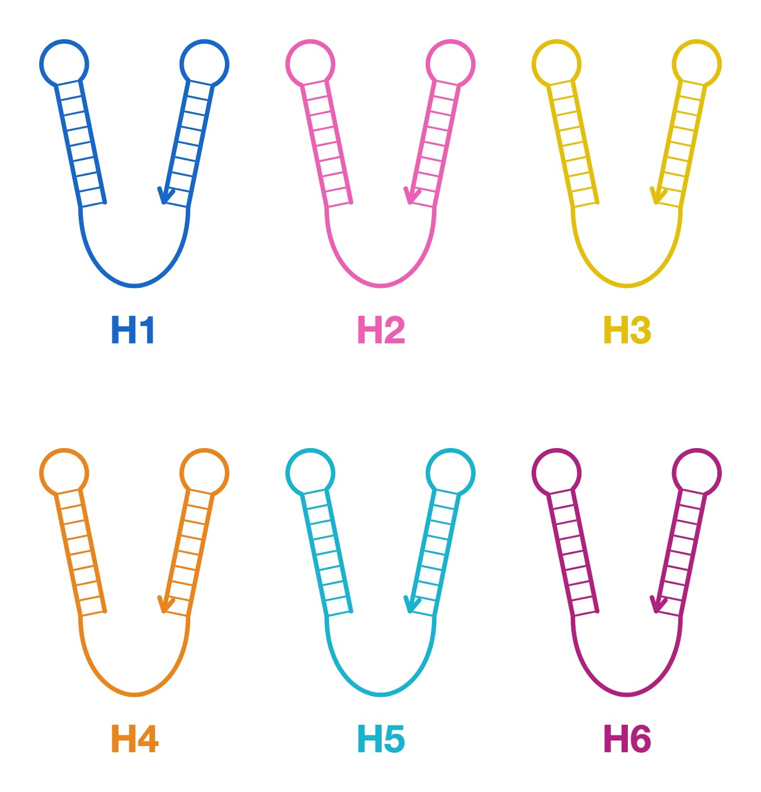

PROJECT
1. Background
The lipid bilayer, a fundamental structural component of life, also constitutes microscopic vesicles known as extracellular vesicles (EVs). EVs are present in all bodily fluids, such as blood and saliva. Among EVs, exosomes—which originate from endosomes—have a diameter of approximately 40 to 160 nanometers (averaging about 100 nanometers) [1].
Cells engage in intercellular communication by encapsulating various biomolecules—such as RNA, DNA, proteins, and polypeptides—within these EVs and releasing them into the extracellular space [1]. Consequently, EVs, which reflect the state of the secreting cell, give important molecular information and are attracting attention for their potential applications in disease diagnosis as biomarkers and therapy.

To analyze the information inside EVs, the lipid bilayer, which acts as a physical barrier, must be disrupted. What matters, however, is not only which molecules are inside EVs but also which EV carries them. We therefore need a way to disrupt the membrane of only the target EV, without affecting other vesicles.
Such technologies are also important for drug delivery systems (DDS) and the direct destruction of cancer cells, which we regard as future extensions of this work.
2. Challenges of Current Technology
Existing membrane-disruption methods do not meet this requirement, for two reasons.
Bulk assay leads to Loss of Origin Information
Bulk assays, such as the chemical dissolution of membranes using surfactants, have often been employed. However, because this method destroys all vesicles simultaneously, critical information—which molecules were contained in which EVs—is lost [2]. Furthermore, surfactants may damage the molecules inside the EVs.
Pre-assembled DNA leads to “Always Active” (Off-target Effects)
Recent DNA nanotechnology approaches attempt to disrupt membranes using physical force. For example, a method has been reported in which DNA nanobarrels are prepared in advance and clustered on a membrane surface to damage the lipid bilayer [3]. However, because these pre-assembled structures are “always active,” they indiscriminately attack membranes, leading to off-target effects. A method that is active only near the target EV is therefore required.
3. Our Goal
A physical membrane disruption system that becomes active only near the target EV.
Achieving this goal will enable the molecular information inside target EVs to be read with their origin preserved, advancing disease diagnosis and biological analysis.
4. Our Approach
To meet this requirement, we propose lipid membrane disruption using in situ assembled DNA bundles by Bundled HCR.
In our approach, Bundled HCR (Bundled Hybridization Chain Reaction) is initiated near the target EV, then rigid DNA bundles are assembled in situ and disrupt lipid membrane. Because this system becomes active only in the vicinity of the target EV, it can prevent the loss of origin information and minimize off-target effects. Our proposal proceeds in three steps.
4.1 How It Works
Step 1: Bundled HCR is initiated by a trigger
Only in the presence of the Trigger DNA does the seed become active. This initiates the Bundled HCR process, causing the Double-Hairpin DNAs to sequentially open and assemble.
Step 2: Cholesterol-modified DNA bundle elongates via Bundled HCR
Through the Bundled HCR process, the DNA bundle elongates to a length ranging from several hundred nanometers to a few micrometers. Because the Double-Hairpin DNAs are modified with cholesterol, a cholesterol-tagged DNA bundle is assembled.
Step 3: Anchors to and disrupts the lipid membrane
Through hydrophobic interactions with the hydrophobic core of the lipid bilayer, the cholesterol tags sequentially anchor to the lipid membrane. The multivalent binding of this highly rigid DNA bundle generates local physical tension, forcing the membrane to deform. When this deformation exceeds the critical curvature of the lipid membrane, it can no longer maintain its structure, resulting in physical rupture.
To establish a proof of concept, this project demonstrated Step 2 (Elongation) and Step 3 (Membrane disruption). Step 1 is our next stage (see Achievements and Future Works).
4.2 Key Factor: Bundled HCR
We have extended the concept of Hybridization Chain Reaction (HCR) and developed what we call Bundled HCR.
Conventional HCR is an enzyme-free cascade reaction driven solely by DNA hybridization. Initiated by a Trigger DNA, two types of hairpin DNAs sequentially open and hybridize via toehold-mediated strand displacement to form a long DNA polymer [4]. While conventional HCR yields a long, single double-stranded DNA (dsDNA), our Bundled HCR generates a long, thick DNA bundle.
The key components of Bundled HCR are a seed, which serves as the foundation of the DNA Bundle, and six types of Double-Hairpin DNAs (H1–H6).
Seed

Double-Hairpin DNAs (H1–H6)

The seed consists of six strands and its reactive sequences are masked by a Blocker strand. Only in the presence of the Trigger DNA is the Blocker displaced, exposing the reactive sequences and switching the seed to an active state.
The following video demonstrates the formation of a DNA bundle composed of 6 dsDNA strands via this Bundled HCR process. By changing the seed design and the number of Double-Hairpin DNA types, this Bundled HCR can be adapted to assemble bundles consisting of any number of strands.
In this video, the active seed opens the Double-Hairpin DNAs by toehold-mediated strand displacement in a fixed order: H1, H2, and H3 open sequentially, followed by H4, H5, and H6, and the cycle then returns to H1, H2, and H3. Through this repeated cycle, multiple dsDNA strands elongate together as a bundle.
In our proposed system, these Double-Hairpin DNAs are modified with cholesterols. Therefore, the resulting DNA Bundle anchors directly to the lipid membrane.
5. Achievements and Future Works
As a proof of concept, this project tested the two questions behind Step 2 (Elongation) and Step 3 (Membrane disruption) of our approach. Demonstrating Step 1 (Trigger) and reaching our goal are future works.
AchievementsThis project
Can a rigid, cholesterol-modified DNA bundle disrupt the lipid membrane?
- In model only: Simulation Identified favourable combinations of vesicle size, DNA Bundle bending rigidity, and linker length for membrane pore formation
- In model only: Simulation Estimated the minimum number of helices required in a DNA Bundle: about 12 helices
- Achieved: Experiment Cholesterol-mediated anchoring of the highly rigid 12-helix DNA Bundle to lipid membranes (GUVs)
- Not yet achieved: Simulation Whether a membrane pore persists and expands after formation, leading to complete rupture
- Not yet achieved: Experiment Lipid membrane disruption
Does Bundled HCR proceed and form a DNA bundle?
- Achieved: Simulation Designed HCR hairpin sequences with thermodynamically favourable sequential hybridization steps
- Achieved: Experiment Seed formation by annealing
- Achieved: Experiment DNA Bundle (6-helix DNA Bundle) formation by Bundled HCR
Future works
- Not yet achieved: Step 1 · Trigger Demonstrate that the seed becomes active only in the presence of the Trigger DNA, which displaces the Blocker strand
- Our Goal A physical membrane disruption system that becomes active only near the target EV
- Achieved
- In model only (not yet tested by experiment)
- Not yet achieved
References
[1] Kalluri, R. & LeBleu, V. S. The biology, function, and biomedical applications of exosomes. Science 367, eaau6977 (2020). DOI
[2] Shao, H. et al. New Technologies for Analysis of Extracellular Vesicles. Chem. Rev. 118, 1917–1950 (2018). DOI
[3] Bennett, I. D., Burns, J. R., Ryadnov, M. G., Howorka, S. & Pyne, A. L. B. Lipidated DNA Nanostructures Target and Rupture Bacterial Membranes. Small 20, 2207585 (2024). DOI
[4] Dirks, R. M. & Pierce, N. A. Triggered amplification by hybridization chain reaction. Proc. Natl Acad. Sci. USA 101, 15275–15278 (2004). DOI